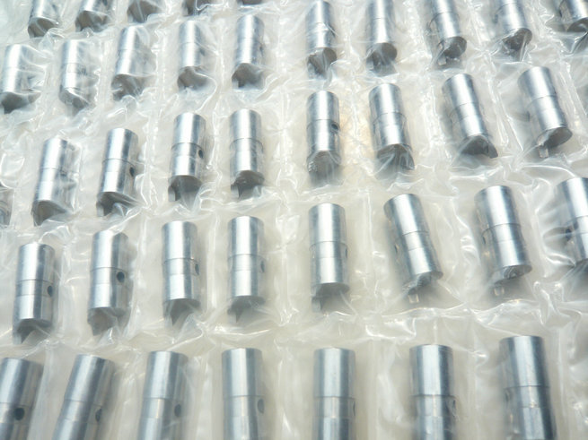
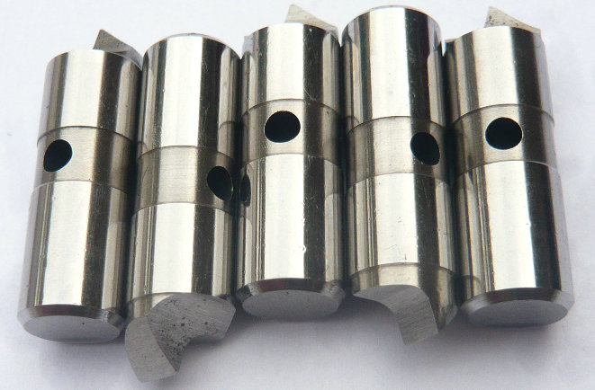
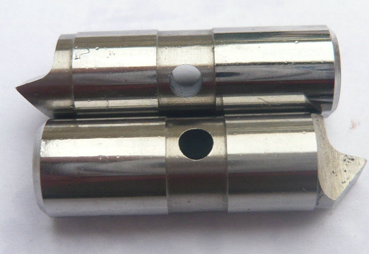
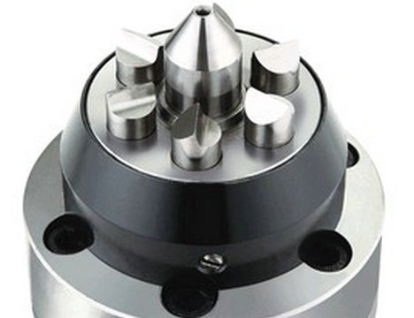

manufacturer of Floating half offset drive blades as Workholding face driver parts for turning, grinding and milling!


The half‑offset design excels where others fail: Extreme diameter‑to‑length ratios – Driving diameters as low as 0.28 inches (≈7 mm), achieving workpiece diameter ratios of 1:5 or even 1:3. Ideal for slender motor shafts and medical device components.
One‑setup complete machining – Turn, gear hob, or mill the entire external contour without repositioning. Gear and spline cutting – High rigidity and stable clamping ensure precision tooth profiles.


Our Custom Manufacturing Capability We do not sell generic pins. We deliver solutions: From your drawing – Flank angles, tip radii, undercut details. We grind to ±0.005 mm. From a sample – A worn or broken pin is enough. We measure, analyze, and replicate or improve. From a face driver model number. We match the original half‑offset layout perfectly.
We produce any quantity – from three pins to thousands – with vacuum heat treatment, vision system inspection, and material certificates. Stop settling for pins that slip, crack, or fail. Choose S7 Half Offset Drive Pins – custom‑made for your toughest jobs. Contact us today with your drawing, sample, or driver model. We deliver toughness where it matters most.
Application of half Offset hardmetals drive pins (face driver parts), chuck drive pins
| Application | Primary Machine Tools | Typical Workpieces | |||||||||
|---|---|---|---|---|---|---|---|---|---|---|---|
| Turning CNC Lathes, | Mill-Turn Centers | Shafts, Gear Shafts, Motor Rotors, Drive Shafts | |||||||||
| Grinding | Cylindrical Grinders | Precision Shafts (e.g., Crankshafts, Camshafts) | |||||||||
| Gear Processing | Gear Hobbing Machines, | Gear Grinding Machines Transmission Gear Shafts, Reducer Gear Shafts | |||||||||
| Heavy-Duty Cutting | Large Lathes, Special-Purpose Machines | Differential Housings, Heavy Shafts with high stock removal | |||||||||
- home
- products
- contact
- equipments
- face driver pins
- offset driving parts
- half offset drive pins
- central driver parts
- standard/ Fixed driving pins
- Lowered drive parts
- clockwise driver pins
- counterclockwise driving parts
- full width drive pins
- life driver parts
- chisel-edged driving pins
- floating drive parts
- power-operated driver pins
- hydraulic driving parts
- mechanical drive pins
- SB driver parts
- FFB driving pins
- carbide driver pins
- tool steel S7 driving parts
- changeable pins